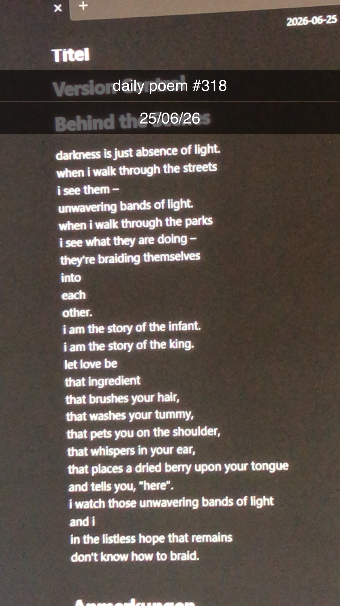

The Infant and the King
[318]darkness is just absence of light.
when i walk through the streets
i see them –
unwavering bands of light.
when i walk through the parks
i see what they are doing –
they're braiding themselves
into
each
other.
i am the story of the infant.
i am the story of the king.
let love be
that ingredient
that brushes your hair,
that washes your tummy,
that pets you on the shoulder,
that whispers in your ear,
that places a dried berry upon your tongue
and tells you, "here".
i watch those unwavering bands of light
and i
in the listless hope that remains
don't know how to braid.
